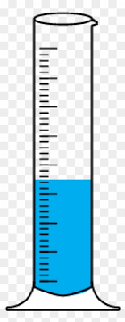
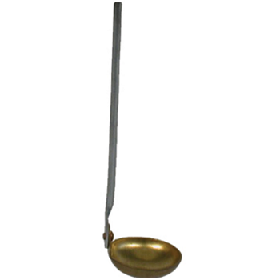
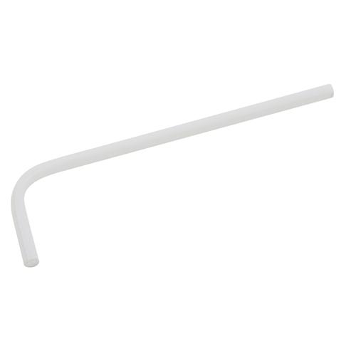
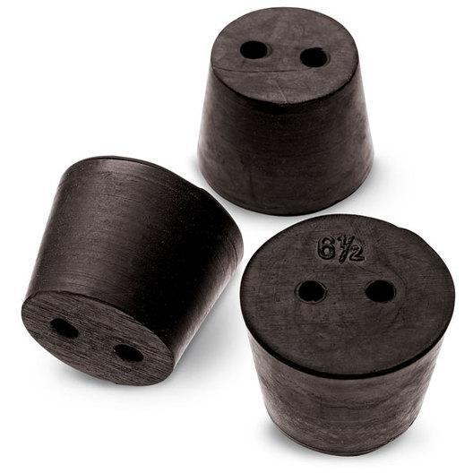
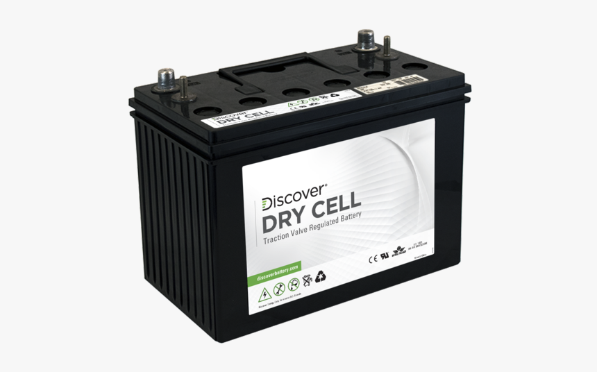

Alum, any of a group of hydrated double salts, usually consisting of aluminum
sulfate, water of hydration, and the sulfate of another element.
Ammonia Hydroxide
It is a solution of ammonia in water. Ammonium hydroxide is used as a
cleaning agent and sanitizer in many household and industrial cleaners.
Ammonia chloride
Ammonium chloride is an inorganic compound with the formula NH₄Cl and a white crystalline
salt that is highly soluble in water. Solutions of ammonium chloride are mildly acidic.
Sal ammoniac is a name of the natural, mineralogical form of ammonium chloride.
Atbottomed Flask
(chemistry) A glass flask used in a laboratory for holding chemical liquids
and solutions, which has a spherical shape for uniform heating.
Bar Magnet
A bar magnet is a rectangular piece of an object, made up of iron,
steel or any other ferromagnetic substance or ferromagnetic composite,
that shows permanent magnetic properties.
Beaker
a wide glass with a lip for pouring that is used especially in
chemistry for holding and measuring liquids.
Beehive shelf
Beehive Shelves are very useful piece of laboratory equipment,
classified as laboratory porcelain ware, which support a receiving
jar while a gas is being collected over water.
Benzene
Benzene is a clear, colorless, highly flammable and volatile,
liquid aromatic hydrocarbon with a gasoline-like odor. Benzene
is found in crude oils and as a by-product of oil-refining processes.
Bulb Holder
A lamp holder is the device for holding a light bulb or lamp. Most light fittings or luminaires have a lamp holder.
Burner
Alcohol burner, also known as a spirit lamp or alcohol stove, is a useful laboratory apparatus.The burner is made of glass or metals such as brass, stainless steel and aluminium.
Calcium Hydroxide
Calcium hydroxide, also called slaked lime, Ca(OH)2, is obtained by the action of water on calcium oxide. When mixed with water, a small proportion of it dissolves, forming a solution known as limewater.
Candle wax
Paraffin wax in particular is made of a mix of hydrocarbon molecules with a varying number of carbon atoms that are obtained from crude oil.
Capilary tube
Provides liquid measurement, transfer, sample collection, and testing. Precision-bore glass capillary tubes. Cut to predetermined lengths, so that each capillary tube.
Charcoal
Charcoal, impure form of graphitic carbon, obtained as a residue when carbonaceous material is partially burned, or heated with limited access of air.
Concentrated Hydro Acid
Concentrated HCl is a highly corrosive acid with many indu strial uses. This chemical is used to adjust the pH of swimming pools.
Concentrated Sulphuric
Concentrated sulfuric acid is a weak acid (see acids and bases) and a poor electrolyte because relatively little of it is dissociated into ions at room temperature.
Conical Flask
A conical flask is a type of laboratory flask which features a flat bottom, a conical body, and a cylindrical neck. Conical flasks are widely used in chemistry laboratories.
Connecting Wire
Connecting wires allows an electrical current to travel from one point on a circuit to another because electricity needs a medium through which it can move. Most of the connecting wires.
Copper Sulphate
A sulphate of copper especially : the normal sulfate that is white in the anhydrous form but blue in the crystalline hydrous form CuSO4·5H2O and that is often used as an algicide and fungicide.
Coppper / Iron Strips
The essentiality of iron and copper resides in their capacity to participate in one-electron exchange reactions.
Cylinder

A graduated cylinder, also known as measuring cylinder or mixing cylinder is a common piece of laboratory equipment used to measure the volume of a liquid. It has a narrow cylindrical shape.
Deflagrating Spoon

Deflagration spoons are stainless steel spoons used for heating substances until they burn away.
Delivery Tube

The delivery tube converts any liquid or gas flowing through a Rubber tube into a free flow. A rubber tube can be connected to or from the top of the tube.
Distilled Water
Distilled water is basically inert, meaning nothing is in the water but hydrogen and oxygen. Distillation kills most organic matter and removes minerals from the water.
Double Bore Cork

Hold the cork firmly in the left hand and place the cork borer on the marked area of the bore. Note: dip the borer in water or glycerine before placing on the cork.
Dry Cell

A dry cell is a type of electric battery, commonly used for portable electrical devices. ... A standard dry cell comprises a zinc anode, usually in the form of a cylindrical pot.
Ethyl Alcohol
Ethanol, also called ethyl alcohol, grain alcohol, or alcohol, a member of a class of organic compounds that are given the general name alcohols; its molecular formula is C2H5OH. ...
Evaporating Dish
Evaporating dishes are shallow open containers used for the evaporation of solutions and supernatant liquids to produce a concentrated solution or a solid precipitate of the dissolved substance.
Filter paper
Filter paper is a semi-permeable paper barrier placed perpendicular to a liquid or air flow. It is used to separate fine solid particles from liquids or gases.
Filtration stand
Filtration, the process in which solid particles in a liquid or gaseous fluid are removed by the use of a filter medium.
Firetongs
Tongs differ in shape are designed to pick up laboratory items including, hot evaporating dishes, beakers, crucibles, and other laboratory apparatuses.
Flat Bottom Flask
Flat bottom flasks are round flasks, usually 1-neck, that are used for heating in distillation or other reagent reactions. They are not as durable as round bottom flasks but don't have the sharp and vulnerable corners of an Erlenmeyer Flask.
Funnel
A funnel is a tube or pipe that is wide at the top and narrow at the bottom, used for guiding liquid or powder into a small opening.
Gas jar
A gas jar is a long glass jar which is closed at one end and open at the other end. It is used for various experiments that involve collection of gases.
Glass rod
A glass stirring rod, glass rod, stirring rod or stir rod is a piece of laboratory equipment used to mix chemicals. They are usually made of solid glass.
Hydrogen peroxide
Hydrogen peroxide, (H2O2), a colourless liquid usually produced as aqueous solutions of various strengths, used principally for bleaching cotton and other textiles and wood.
Physical balance
The device which is used to find the mass or weight of the given object is physical balance. This physical balance device can correct the mass of an object into milligram.
Tripod stand
A laboratory tripod is a three-legged platform used to support flasks and beakers.
Spatula
In laboratories, spatulas and microspatulas are small stainless steel utensils, used for scraping, transferring, or applying powders and paste-like chemicals or treatments.
Pipette
Small piece of apparatus which typically consists of a narrow tube into which fluid is drawn by suction (as for dispensing or measurement) and retained by closing the upper end.
Thistle Funnel
A thistle tube is a piece of laboratory glassware consisting of a shaft of tube, with a reservoir and funnel-like section at the top.
Wire gauze
SA wire gauze is a sheet of thin metal that has net-like patterns or a wire mesh.